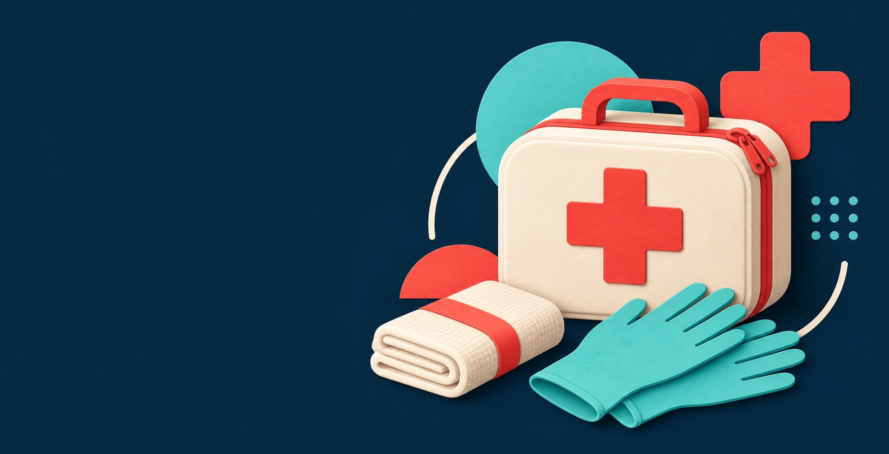
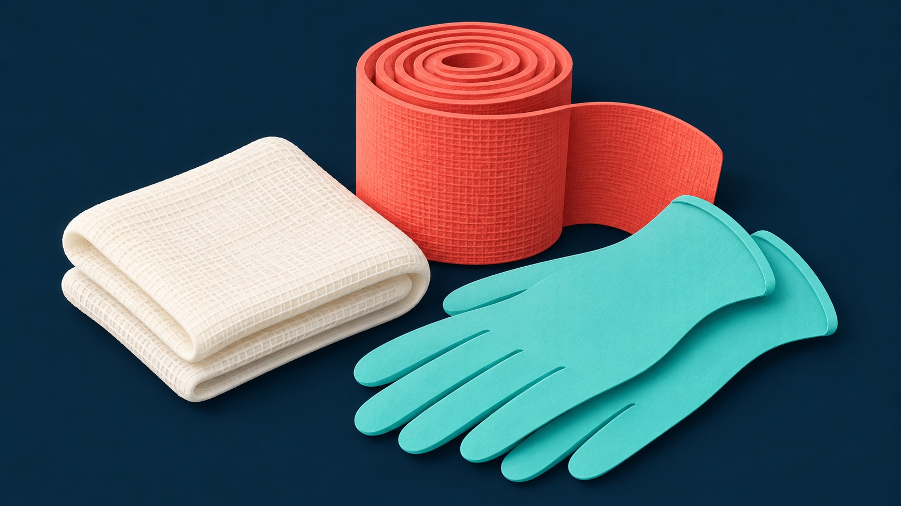
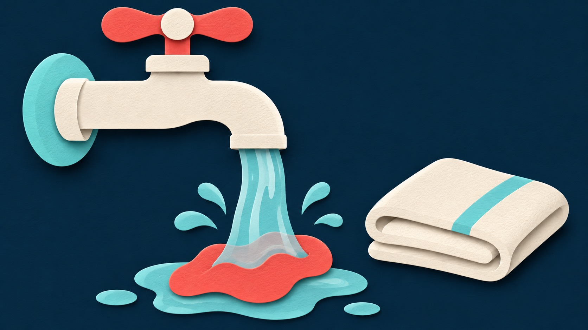

01 / START HERE
01 / START HERE
Check · Call · Care
Start by checking safety, calling for help, and giving care within your training.
Learn the first steps →First Aid, First is a clear starting point for recognizing an emergency, responding to bleeding, and caring for a burn while help is arranged.

A little preparation. A more confident first response.
Choose a situation below. Each page keeps the key ideas short, visible, and easy to revisit.
01 / START HERE
Start by checking safety, calling for help, and giving care within your training.
Learn the first steps →
02 / BLEEDINGLearn the basic response to serious external bleeding.
Explore bleeding basics →
03 / BURNSUnderstand simple first steps for a thermal burn.
Explore burn basics →Choose a situation to find the relevant first steps. If someone is unresponsive, not breathing normally, or has life-threatening bleeding, call your local emergency service immediately.
Use this site to learn the first actions, then practise with a recognized first aid course. Keep emergency information easy to find.
In Bahrain, 999 reaches emergency services. If you are elsewhere, learn your local emergency number before you need it.
Know where a kit is kept at home, school, or work. Check that basic supplies are available and ready to use.
Reading is a starting point. A practical first aid, CPR, and AED course builds the skills to respond with more confidence.
See American Red Cross first aid steps and the Bahrain Ministry of Health emergency listing.
Explore a complete guide or jump straight to a situation. Each guide explains warning signs, first actions, mistakes to avoid, and when professional help is needed.
Keep a first aid kit at home, know where one is at work, and check it regularly. Replace supplies after use and remove items past their expiry date.
| Supplies | Purpose |
|---|---|
| Sterile gauze and absorbent dressings | Cover wounds and help apply pressure. |
| Adhesive bandages and medical tape | Cover small injuries and secure dressings. |
| Nonlatex gloves | Help reduce contact with blood and body fluids. |
| Emergency blanket | Help protect a person from getting cold. |
| First aid instructions and emergency contacts | Keep essential guidance within reach. |
This is a starting list. Choose supplies for your household and activities, and ask a health professional about personal medical needs.
Try these short learning scenarios. Use the linked guides to understand the reasons behind each answer.
After getting away from the heat source:
While emergency help is being arranged:
Before approaching the person:
Use this site as a quick introduction, then consider a practical first aid course for hands-on skills.
Register your interestEnter your details to check the form. This classroom project shows a confirmation on screen; it does not send your information to a server.